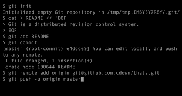

Commande Git
Nous allons voir les commandes Git indispensable que vous devez connaître pour faire de vous de bon developpeurs
Nous allons voir les commandes Git indispensable que vous devez connaître pour faire de vous de bon developpeurs
| # | Explications |
|---|---|
| git init | Permet la création d'un dépot git local en créant dans le repertoire un fichier .git lié à un serveur ou dépôt git |
| git clone |
Permet de copier un dépôt remote pour crée un local lié à ce remote |
| git remote add |
Permet de lié votre repo local a votre repo remote |
| git status | Permet de connaître l'état courant de vos copies local(les modifications ont-elles été commitées, les fichiers ajoutés, les commit pushé). Les interface graphiques vous l'indique souvent par des couleurs et icones |
| git add |
Permet lorsque vous créez un fichier dans votre version de travail, il faut l'integré grâce à cette (.* ex:"git add .txt" permet d'ajouter tous les fichier d'un certain type) |
| git commit -m "Message du commit" | Permet de déposer les modifications de la verion de travail sur la version locale. Il est obligatoire d'accompagner cette commande d'un message, il indique le contenue des modifications |
| git push | Permet de "pousser" la branche actuelle du local vers le remote. Git applique alors successivement tous les commit au remote (ATTENTION: il est recommandé de faire un git commit avant d'effectuer cette commande) |
| merge |
Permet de fusionner deux éléments: on ajoute les modifications de l'un à l'autre. L'opération est, dans la plupart des cas, transparente. Mais des conflits peuvent apparaître: deux modifications sont incompatibles(usuellement: on a touché à la même ligne de code), il faut alors résoude le conflit : choisir/écrire à la main la version que l'on veut garder pour chaque conflit |
| git rm |
Permet de supprimer les fichiers du working tree et de l’index |